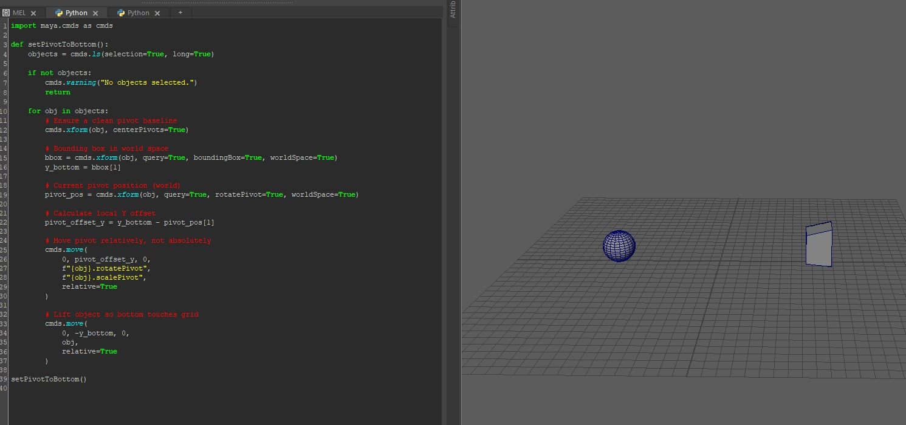
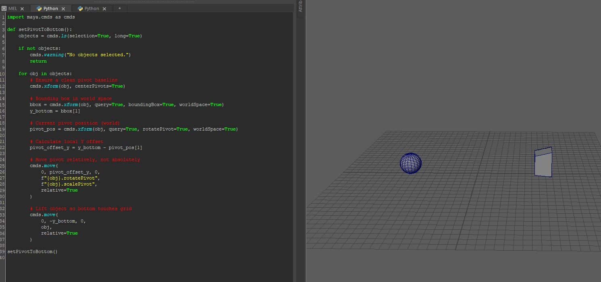

01. Bottom Pivot Alignment & Grid Snapping Tool
A Maya Python tool that automatically aligns an object’s pivot to its lowest point and snaps both the pivot and the mesh to the grid. This ensures consistent base alignment and centered placement, making modular asset layout and engine integration more reliable.
 Code

Code
